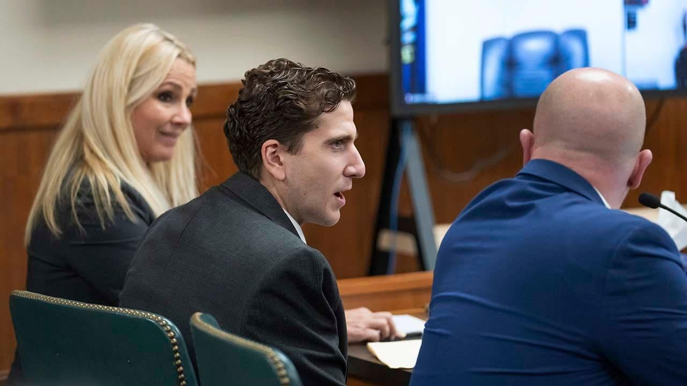

Bryan Kohberger asks court to unseal filings prosecutors wanted to keep secretDefense lawyers for Idaho student murders suspect Bryan Kohberger have asked the court to unseal a document that they say prosecutors wanted hidden from the public. "Mr. Kohberger sought sealing of his filings solely based on email communications with the Latah County Prosecutor’s office stating they wanted the filings sealed," Kootenai County Public Defender Anne Taylor wrote to the judge. "The deadline for Mr. Kohberger’s motion was eminent; thus in an abundance of caution the Defense filed a motion to seal." But after further review, the defense determined that there was no basis for sealing the prior filing, a motion asking Judge John Judge to reconsider his denial of Kohberger's effort to have the indictment against him tossed. "Mr. Kohberger acknowledges the right of the public to be fully informed of the issues," Taylor wrote. "Mr. Kohberger has a right for the rule to apply as it is written rather than disadvantage him with items remaining sealed that are not within the scope." Much of the case has been conducted out of the public's view, due to filings under seal and a restrictive gag order. Earlier this month, Judge scheduled a closed-door hearing on the motion to reconsider for Jan. 26 and a public hearing on the prosecution's request to schedule a trial date later that same day. Judge previously denied two defense motions to dismiss, finding Kohberger's lawyers were "historically interesting and creative" in their arguments but not grounded in state law. "Kohberger has failed to successfully challenge the indictment on grounds of juror bias, lack of sufficient admissible evidence, or prosecutorial misconduct," Judge wrote. "Kohberger was indicted by an impartial grand jury who had sufficient admissible evidence to find probable cause to believe Kohberger committed the crimes alleged by the State. Further, the State did not engage in prosecutorial misconduct in presenting their case to the jury." Kohberger is accused of entering a six-bedroom home just steps off the University of Idaho campus and killing four of the six students inside – Madison Mogen, 21, Kaylee Goncalves, 21, Xana Kernodle, 20 and Ethan Chapin, 20. Housemates and best friends Mogen and Goncalves were discovered in an upstairs bedroom. Under Mogen's body, police found a Ka-Bar knife sheath they say tested positive for Kohberger's DNA. Police in Pennsylvania arrested Kohberger at his parents' house on Dec. 30, 2022, weeks after the murders. At the time of the slayings, he was studying for a Ph.D. in criminology at Washington State University, about a 10-mile drive from the King Road house. Kohberger could face the death penalty if convicted. |
 |